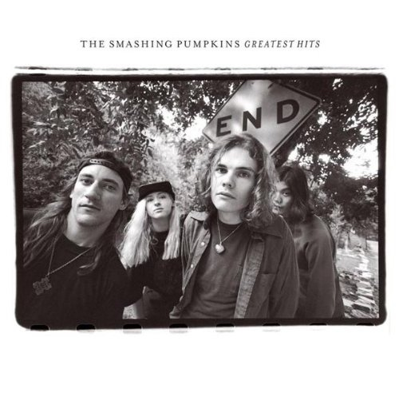

消失了好一阵子，思考人生去了。思考完过后呢，喜欢的东西当然还是会写的。
今天的主角是「The Smashing Pumpkins 碎南瓜」的一首歌《1979》。
碎瓜是我大学时最喜欢的乐队，之一。没有之一的那是 The Cure，我人生第一笔兼职工资买的就是《The Cure: Trilogy - Live in Berlin》。
一开始我从来没听说过碎瓜，后来宿舍有个家伙觉得我挺逼的，不能输给我，就从家里拿了这张碟回来显摆。结果它马上就成了我接下来每个寒暑假的床头之物（当时比较穷，只有放假时才能借拥有「real！黄金主板」的另一室友的discman回家听）。
